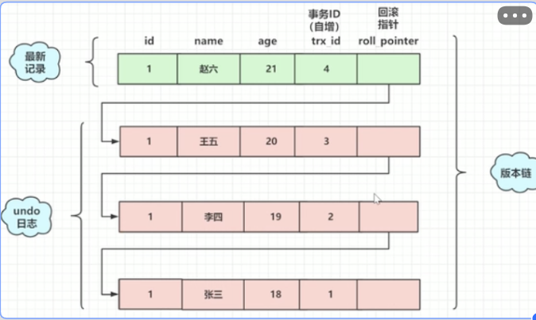
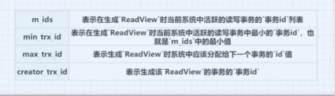
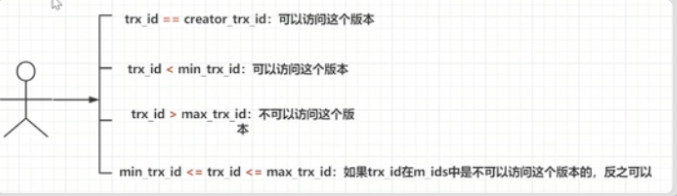

1. MVCC
概念：multi version concurrency control多版本并发控制 。MVCC 只在 REPEATABLE READ（可重复读） 和 READ COMMITTED（已读提交）这俩种隔离级别下适用
1.1. 当前读
给读操作加上共享锁、排它锁，DML 操作加上排它锁，这些操作就是当前读
- 读取的数据记录，都是最新的版本，会对当前读取的数据进行加锁，防止其他事务修改数据，是悲观锁的一种实现
- 如下操作都是当前读：
- select lock in share mode（共享锁）
- select for update（排他锁）
- update （排他锁）
- insert （排他锁）
- delete （排他锁）
- 串行化事务隔离级别
1.2. 快照读
普通的select id name user where id = 1;都属于快照读
- MVCC实现
- 快照读读到的数据不一定是最新版本的数据
1.3. 目的
- 提供数据库读写性能，快照读，非当前读
- 读写时无须竞争锁来提高性能
1.4. 数据库事务
- 原子性由undo log实现
- undolog 记录的是回滚日志，回滚指针指向了前一个是数据，根据回滚指针可以追溯到未变更前的所有数据形成了一个版本链
- 
- 持久性是由reod log实现(WAL写前日志)
- 隔离性通过加索和MVCC实现
- 写写操作，通过行锁/表锁实现
- 写读操作，通过MVCC实现
- ReadView介绍
- 作用：在select时可以知道在版本链中选用哪条记录
- 数据结构：
- 如何判断版本链中哪个版本可用？
- MVCC如何实现RC(读已提交）和RR(可重复读)
- 读已提交生成ReadView的时机是每一次select语句时生成，所以访问的一定是最新的版本的，所以不能保证可重复读
- RR生成ReadView的时机是以一个事务为单位的，RR可重复读会造成幻读，innodb是使用间隙锁锁住了区间，如查询>2的数据，则>2的数据都不会再插入来解决幻读
1.5. 实例
案例：需要支付一笔钱，两个人都登录进去了，这时候问题发生了
悲观并发控制PCC悲观锁（写多读少的并发环境下使用）： 假设A正在访问并且发起了支付，那么A这条数据是已经锁定了的，悲观的以为一定会发生锁竞争，所以直接加锁。这就导致了B查询不到此条数据，需要等待到A访问完毕释放锁。 悲观锁保证在同一时间只能有一个线程访问，默认数据在访问的时候会产生冲突，然后在整个过程都加上了锁
乐观并发控制OCC乐观锁： 在A访问并且支付的时候，B也可以访问到数据。乐观锁认为在并发场景下，也不会产生冲突，所以也不会加锁。而是在数据提交时检测，如果有冲突则返回冲突信息
总结：Innodb 的 MVCC 机制就是乐观锁的一种体现，读不加锁，读写不冲突，在不加锁的情况下能让多个事务进行并发读写，并且解决读写冲突问题，极大的提高系统的并发性。
1.6. MVCC解决了什么问题
事务并发情况遇到的问题 点这详解
- 脏读：读取到其它事务未提交的数据
- 不可重复读：一个事务读取一条数据时，由于另一个事务修改了这条数据，导致读取前后数据不一致
- 幻读：一个事务读取了某个范围数据的数量，另外的事务新增了这个范围的数据，再次读取发现得到结果不一致
MVCC 可以解决脏读，不可重复读，MVCC 使用快照读解决了部分幻读问题，但是在修改时还是使用的当前读，所以还是存在幻读问题，幻读的问题最终就是使用间隙锁解决。
1.6.1. MVCC实现三大要素
两个隐式字段、undo 日志、Read view